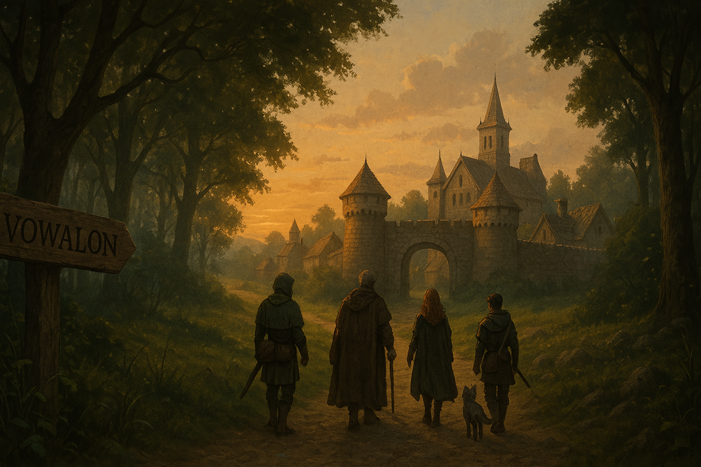

Chapter 5: Back in the Woods
Curse of Vowalon

Curse of Vowalon
15048.07.21
台北市議員帶著 Grenland 再度走入了嚎叫森林。在走了一段時間後，眾人迷了路，花了些時間才折回原處，走回正確的道路。
在經過偵查後，大家準備好面對前方的狼群。在成功擊退了狼群後，大家也選擇在原處紮營過夜。
15048.07.22
守夜過程中，Samael 撿到了一隻幼狼，並選擇帶著他繼續冒險，並將他取名為「酷爆」。
起床後，大家準備出發，繼續冒險。大家在河邊裝了水後，準備過橋。木橋不好過，幾位成員落入河水中，而最終 Midori 沒能爬起，順著河水繼續往下飄走……Midori 在河水中差點淹死，但是在守護神 Keinra 的庇護下生存了下來，也爬到了岸上，虛弱地等待其他人的到來。
其餘的台北市議員們終於在踏過了一座石橋後再次與 Midori 相會，不過卻發生了一點小衝突。Midori 向 Tai Tai 我還要襲擊，搶奪了他的背包，Tai Tai 我還要卻選擇連自己的神秘項鍊也都遞給了 Midori。
眾人繼續朝 Vowalon 前進，途中遇到了一大批的狼群。戰鬥中幾名成員一度陷入昏迷，大家在與狼群戰鬥之餘進行搶救，最終將來襲的狼群全數殲滅。
距離 Vowalon 越來越接近，路邊一度出現一道黑影，大家試圖走入森林內偵查，卻苦無結果。不過後來大家也在路邊撿到了幾顆神秘的果實，在 Samael 衝動地咬下一口後，發現口味香甜，整個人神清氣爽，大家也分別把果實吃了，並把種子留下。
午後，眾人終於踏出了嚎叫森林，Vowalon 再次顯現於大家的眼前。